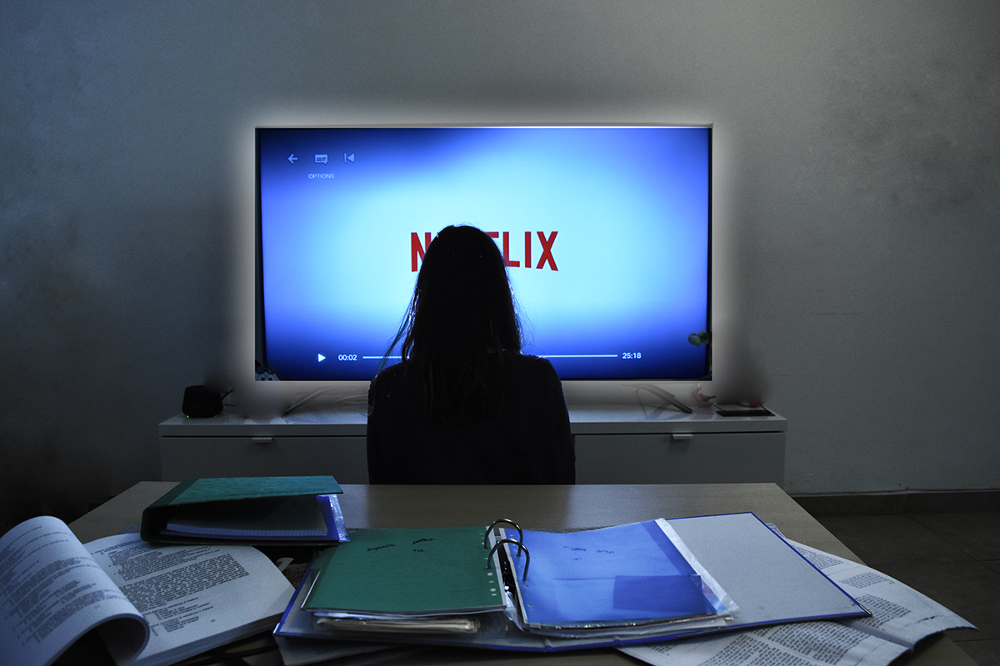
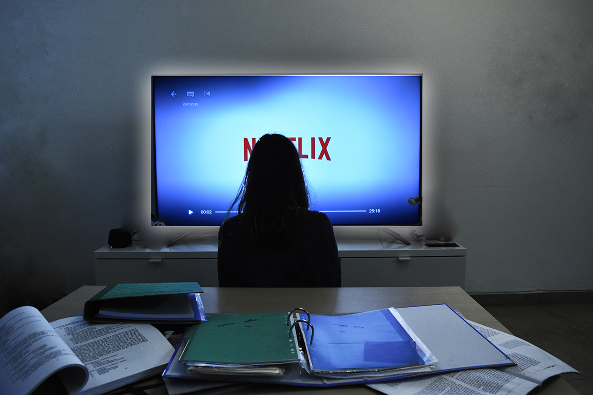

The Bookworm
 

{kind=link}
תיאור עובדתי
היצירה היא מודולציה לציור של האמןCarl Spitzweg משנת 1852. הקומפוזיציה סטטית משום שיש קווים אופקיים ואנכיים שחוצים זה את זה (השולחן והקווים ליד התמונה) הקומפוזיציה גם ממורכזת מה שעוד מוסיף לסטטיות, והצבעוניות לא רוויה – אין צבעים חזקים מאוד, רובם דהויים. רואים כי הנעליים שונות אחת מהשנייה, וכי הוא קורא ספר ומחזיק אותו מאוד קרוב לפניו שלא נראה כי יש כיתוב עליו. הוא מחזיק מטרייה, ומאחוריו יש מדף של ספרים. לידו נמצאת סלסלה שרשום בה – Don't Forget To Buy chees and matches, הכפתורים של המעיל שלו לא סגורים נכון (פספס אחד) והוא מחזיק כמה ספרים ביחד. בנוסף נראה שהכובע שלו נראה מעוך ויש משהו בתוכו, נראה כמו עוד פתק.
תיאור פרשני
באופן פרשני – האדם נראה מאוד מפוזר, כל כך עד כי לא שם לב שנעל נעליים לא תואמות ושמעילו לא סגור כראוי, וכובעו נראה כי נמעך על ידי משהו לפני שיצא והוא גם לא שם לב. לדעתנו נראה כי האדם מייחס חשיבות לדברים כמו דמיון, וקריאה, ותרבות, ופחות מתייחס למציאות בה הוא חי (שזה במקרה הזה המטלות שיש לו לעשות). זו ככל הנראה הסיבה בגללה הוא מזניח את חובותיו ואפילו את המראה שלו, ראשו עסוק בדברים אחרים, וברצון לעשות כל דבר אחר. זו גם הסיבה להימצאות הפתק "אל תשכח לקנות את הגבינה והגפרורים" בסלסלה הריקה שלו. היוצר אולי גם ניסה להביע איזשהו חוסר ביטחון שנובע ממנו, ולכן הוא צייר את האדם מחזיק את הספר קרוב מאוד, כנראה כדי להסתתר או להסתיר חלק בפניו. היוצר מנסה להעביר את תחושת ה"חלום בהקיץ" כי האדם נראה כל כך אבוד מהסיפור שהוא קורא, עד שהוא לא שם לב שהוא ממש מחזיק את פניו ממש קרוב לספר ושכח את מה שהוא רצה לעשות. נראה כי היא קורא יצירה שקשורה לאומנות משום שבמדף שמאחוריו, על אחד הספרים כתוב ART.
התרשמות אישית
באופן אישי מאוד התחברנו לציור, משום שבימינו היום נראה כי גם אנחנו נוטים להישאב לעולם אחר וללכת לאיבוד בדמיון שלנו ממש כמו האדם ביצירה. בין אם זה לחפש מפלט ל"בעיות" שצצות בחיינו או רק להתחמק ממטלה כי "למי יש כוח?", בין אם זה דרך משחק מחשב, סרט אהוב או סדרה אהובה, או להאזין למוזיקה שעות רבות ולשכוח ממה שאנחנו אמורים לעשות. גם אם זה רק לרגע, העולם הזה "שואב" אותנו בדיוק כמו שהוא שואב את האדם ביצירה.